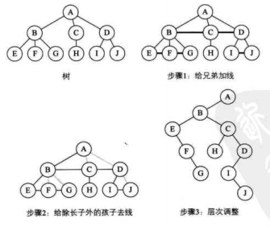
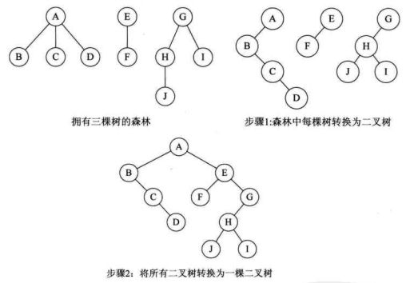
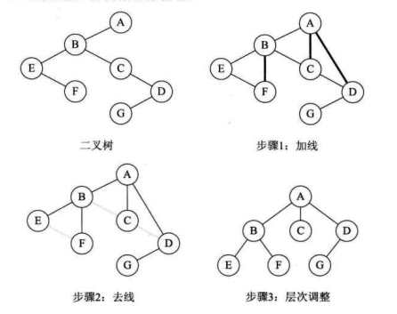
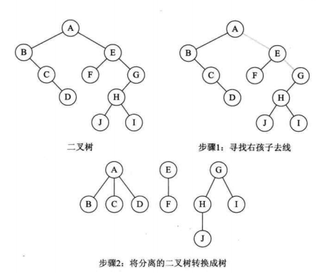

树转换成二叉树
树可以有很多分叉,但是和二叉树整体结构上是一样的,都是一样的父结点,兄弟结点子结点概念等,不同在于树会有很多叉,不单单只有两叉,所以我们就从分叉入手.
- 连线:所有兄弟结点化作前兄弟的右子树
- 去线:父结点去除除左子树之外的子树关系.
- 结构细调便于理解.

森林转换二叉树
森林转换成二叉树与树转换二叉树基本一样,从上面的例子可以看到转换之后的二叉树根节点只有左子树的,并没有右子树.
森林转换时就是将其他的树作为右子树联系上去就可以了.
- 每棵树转换二叉树
- 后序二叉树往前一棵二叉树的右子树拼接.

二叉树转换树
二叉树转换成树就是树转换时的超过逆转即可.
- 加线:若根节点的左子树存在右子树则连接根节点和左子树的有节点,然后将此结点看做左子树,继续循环.
- 去线:删除左子树与右子树的连线.
- 结构细调便于理解

二叉树转换森林
同理反转
- 去线:把根节点和右子树之间的连线去掉,然后以右子树作为根节点继续循环.
- 连线:将剩下的二叉树根据二叉树转换成树进行操作即可.

内容引自大话数据结构